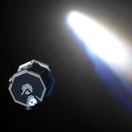

Beginn der unbemannten Weltraumfahrt. Russland und Amerika schickten Sonden ins All. Die ersten russischen Versuche, Lunik A,B,C wurden durch Raketenexplosionen zerstört. Lunik 1(Jan., 1959) schwenkte nach einem Vorbeiflug am Mond unbeabsichtigt in einen Sonnenorbit ein, bestätigte aber die Existenz des Sonnenwindes. Lunik 2 (Sept., 1959) war die erste Sonde, die beabsichtigt auf der Mondoberfläche aufschlug. Lunik 3 (Okt., 1959) fotografierte die Rückseite des Mondes. Auf amerik. Seite gab es die "Pioneer"-Missionen. Erprobung der Technik stand an erster Stelle, Wissenschaft kam danach. Pioneer 0,1,2,3 explodierten oder verglühten in der Erdatmosphäre. Mit "Pioneer 4" gelang den USA am 4. März 1959 ein Durchbruch: Der Mond wurde in 60.000 km Abstand passiert. Die Sonde verließ danach den Wirkungsbereich der Erdschwerkraft und drang als erstes amerikanisches Raumfahrzeug in den interplanetaren Raum vor. Der Psychologe Frank Rosenblatt begründete den Begriff "Perceptron", der zu einer Grundlage für Neuronale Netze wird.